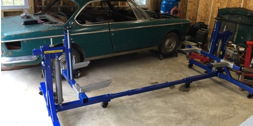
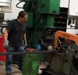
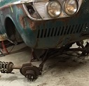
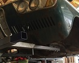
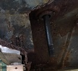
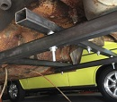
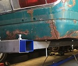

April 2016- Rotisserie, First Attempt
Serious Restoration Means Rotisserie
This BMW is my third vintage bimmer restoration. I say restoration loosely. Over the years I played around and experimented fixing and replacing things. My first car in 1980 was a 70 BMW 2002. Body work involved lots of fiberglass patching with Bondo and acrylic paint. I got that car looking and running good considering. Years later I got semi serious with a 76 2002 and actually removed all rust and replaced some body panels, still used some fiberglass, but upped my game with surface prep from bare metal to urethane clear coat. It's an evolution process. One thing I learned. When working on an old BMW which rust mostly down low, you gotta get the car UP. Way up. Nothing worse than trying to work on the bottom of a car laying on your back in a tight space especially swinging a welding torch. Elevate. Not just jack stands, but eye level. Rotisserie along with metal fabrication and welding is the next level.
After doing my research, as well as contemplating building my own rotisserie, I finally decided to buy the well rated and affordable Auto Lift CR-3000. It was delivered to my front door and was pretty easy to put together. I thought it would be pretty intuitive on how to magically mount the BMW 2000c to the rotisserie. Alas, that was not the case.
Got my Rotisserie, But How Does It Fit?
I discovered that there is not a whole lot out there on the internet regarding how to mount these cars on a rotisserie. I don't really know of anyone who has done it. There was one site where a guy was selling his rotisserie specifically built for his e9/3.0cs restoration. I could study his pictures. There are some sites where professionals mount the cars, but on frames far more substantial than what I was working with. I really felt I was creating my own path.

{kind=link}
Dropping the Suspension

{kind=link}
The dicey part about suspending a 2000c (or e9) in the rear with no rear suspension is there is no real "confidence inducing" place to mount the car on jack stands. There is nothing back there. No frame rails, nothing. I very nervously relied on the two jack points for the trunk jack on the rear rockers hoping the rocker integrity was there to support the weight. Note the threaded shaft in the picture where the rear suspension mounts and where the rotisserie arms will connect as well.

Mounting the rotisserie to the front of the car was pretty strait forward. I used two 40 inch lengths of 3/16 square steel tubing that slid in nicely to the rotisserie arms. I had to drill the requisite holes and I bought metric threaded bolts and used shims.
Mounting the Rear, A Challenge

{kind=link}
I have seen pictures of guys actually mounting an e9 on the rear bumper mounts and spinning the car upside down, and getting away with it. That's pretty adventurous. I have also heard about guys attempting to do that, only to have the rear sheet metal and the rear 
{kind=link}
I was able to mount the car at the rear using a 3/16 square tube cross section joining the two rear mounting points, and then extending 60 inch 3/16 square tubing. I used a stack of washers to eliminate and play at the rear shafts. I joined everything using long bolts and nuts after drilling them out.

{kind=link}
I pulled out all of the supporting jacks and with some fanfare, the car was now resting on the rotisserie. My main goal at this point was just to be able to move the car around and get it out of the way until I finished another project.
Here is a video of attempt No. 1.